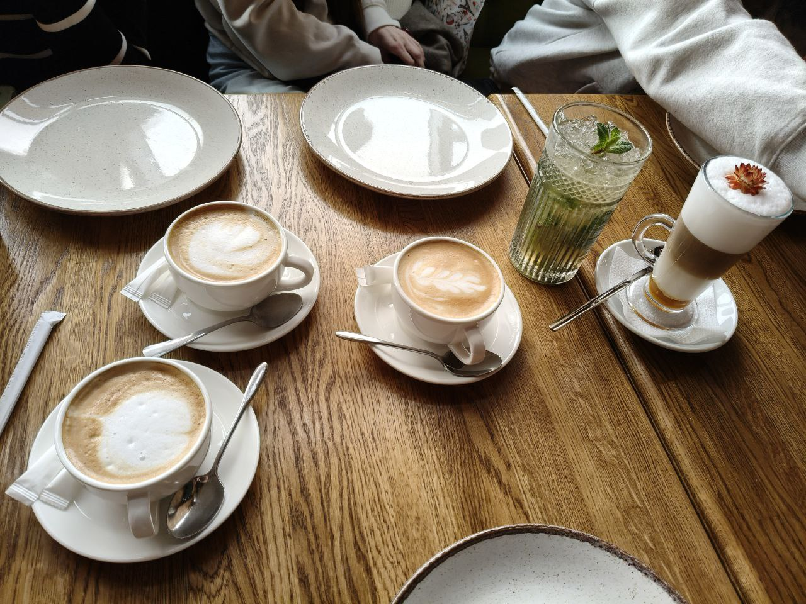
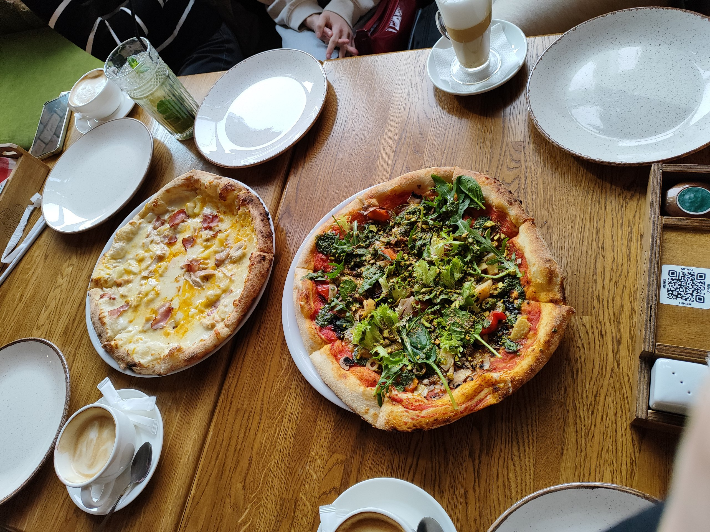
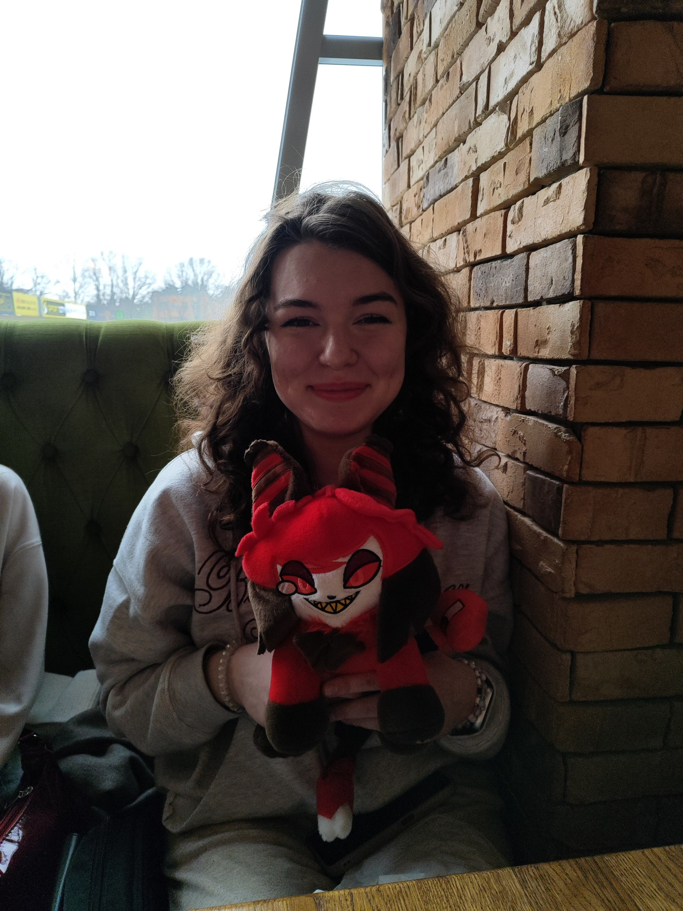
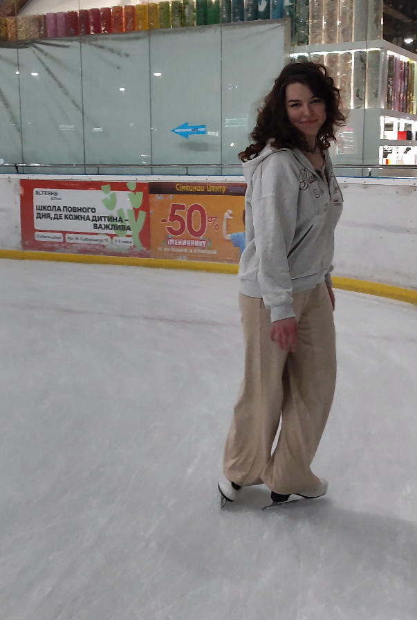
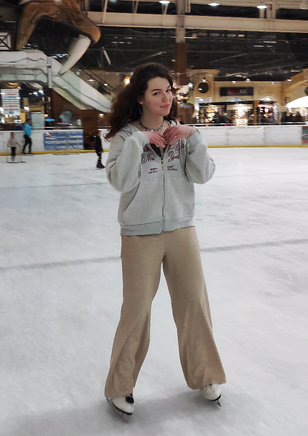

Таємний Санта
-

-

-

-

-

Ми з подружками зібралися і нарешті влаштували Таємного Санту.
День почався з того, що ми поїхали в кафе Маріо, де замовили собі піццу і напої, а також обмінялися подарунками. Після цього ми трохи пошопилися і пішли на каток.
Це було дуже класно, з нетерпінням чекатиму на подальші івенти і нашу
реалізацію їх.